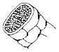
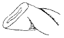
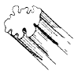
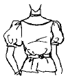
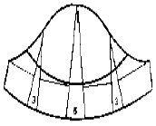
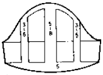
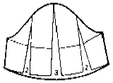
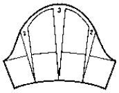
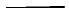
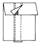

패션디자인산업기사 (2004-05-23 기출문제)
1과목: 피복재료학
1. 폴리아미드 섬유에 대한 설명으로 옳은 것은?
- 나일론은 물질명사로서 합성선상 폴리아미드 물질에 쓰이는 말이다.
- 천연 폴리아미드는 분자모양이 구상인 것이 섬유로 쓰인다.
- 나일론의 명칭은 반복구조 단위 중 NH 의 수이다.
- 나일론은 습윤시 강도가 10-20% 증가한다.
(정답률: 알수없음)

2. 다음 중 양모섬유의 단면인 것은?



(정답률: 알수없음)
3. 다음 중 무기질 섬유의 일반적인 특성을 설명한 것 중 가장 옳은 것은?
- 용도가 다양하고, 부드럽다.
- 염색성이 매우 우수하고, 가볍다.
- 불연성이며 내열성이 크다.
- 위생적인 피복재료이다.
(정답률: 알수없음)
4. 대마(hemp)의 특징을 설명한 것 중 틀린 것은?
- 신도가 작다.
- 강도가 작다.
- 기계방적이 불가능하다.
- 탄성이 나쁘다.
(정답률: 알수없음)
5. 다음 중 직물의 앞면과 뒷면을 구별하기에 가장 좋은 방법은?
- 실의 꼬임수
- 실의 종류
- 직물변의 상표
- 실의 꼬임 방향
(정답률: 알수없음)
6. 다음 중 위파일 직물에 속하는 것은?
- 포플린(poplin)
- 코듀로이(corduroy)
- 타올(towel)
- 카펫(capet)
(정답률: 알수없음)
7. 다음 중 주자조직에 대한 내용으로 옳은 것은?
- 실의 굴곡도는 조직에 따라서 여러 가지로 만들 수 있다.
- 구김이 생기기 쉬우며 광택이 비교적 나쁘다.
- 제직하기 쉽고, 그 응용성이 넓다.
- 밀도는 가장 많이 할 수 있으나 마찰에는 약하다.
(정답률: 알수없음)
8. 다음 중 직물 조직에 대하여 바르게 설명한 것은?
- 끝 손질중에 생긴 결점을 고치는 계획
- 짜여진 제품에서 단위간격 당 경사 위사의 수
- 경사와 위사가 교착하는 방법
- 직물을 만들 때의 계획
(정답률: 알수없음)
9. 다음 중 부직포(nonwoven fabrics)에 대한 설명이 옳바르게 된 것은?
- 섬유 집합체를 화학적 수단이나 기계적 작용 또는 적당한 수분과 열로 처리해 섬유 상호간을 결합 시킨것이다.
- 2 종류의 필라멘트를 균일하게 혼합한 것이다.
- 합성섬유의 열가소성을 이용해서 필라멘트에 크림프를 부여한 것이다.
- 빛의 반사량을 많게하여 만든 엷은 직물이지만 투과해 보이지 않게 만든 것이다.
(정답률: 알수없음)
10. 직물면에 경,위사의 나타나는 수가 같은 조직이 될 수 없는 것은?
- 3 매 사문직
- 4 매 사문직
- 6 매 사문직
- 8 매 사문직
(정답률: 알수없음)
11. 다음 중 정경(Warping)과 관계가 가장 적은 것은?
- 제직준비 공정이다.
- 설계된 직물의 폭에 따라 위사의 폭을 균일하게 정하는 것이다.
- 설계에 따라 경사의 밀도 또는 나비를 정하는 것이다.
- 필요에 따라 다른 종류의 경사 또는 다른 색의 경사를 사용하여 세로 줄무늬를 내는 것이다.
(정답률: 알수없음)
12. 합성섬유 중 그 원료가 부가 중합 반응으로 얻어지는 것은?
- 데크론
- 테릴렌
- 나일론
- 오올론
(정답률: 알수없음)
13. 장식사의 효과를 내는 방법이 아닌 것은?
- 고리를 만들어 주는 방법
- 매듭 등의 마디를 만들어 주는 방법
- 양초를 칠하여 강연하는 방법
- 심사에 나선사를 감는 방법
(정답률: 알수없음)
14. 합성섬유의 화학구조가 맞는 것은?
- 폴리요소:-[OROCNHR'NHCO]n
- 폴리아미드:[-NH(CH2)6NH.CO(CH2)4CO-]n
- 폴리에스테르:H -[ NH(CH2)9NHCO]n- NH2
- 폴리우레탄:H-[OROCE'CO]n- OH
(정답률: 알수없음)
15. 다음 중 내일광성이 가장 좋은 섬유는?
- 폴리에스테르(PET)
- 아크릴(acryl)
- 나일론(nylon)
- 견(silk)
(정답률: 알수없음)
16. 다음 중 평직으로 된 직물이 아닌 것은?
- 옥양목
- 광목
- 포플린
- 사아지
(정답률: 알수없음)
17. 면사 60's 3올을 합연한 실과 굵기가 같은 것은?
- 20's
- 30's
- 180's
- 360's
(정답률: 알수없음)
18. 다음 섬유 중 섬유 내부구조가 세리신과 피브로인으로 구성되어 있는 섬유는?
- 케시미어
- 양모
- 마
- 견
(정답률: 알수없음)
19. 다음은 인견섬유의 성질을 설명한 것이다. 이들 중 거리가 먼 것은?
- 강도가 약하다.
- 탄성과 레질리언스가 좋지 못하다.
- 내열성이 크다.
- 습윤시도 커다란 강도변화가 없다.
(정답률: 알수없음)
20. 다음 편성물 중 원단의 표리모양이 외관상으로 가장 많이 상이해 보이는 것은?
- 터크편(tuck)
- 고무편(rib)
- 평편(plain)
- 펄편(purl)
(정답률: 알수없음)
2과목: 패션디자인론
21. 옷을 위한 설계도라고 할 수 있고 가장 정확하게 설명되어야 하는 것은?
- 착장화
- 스타일화
- 도식화
- 크로키
(정답률: 알수없음)
22. 스커트와 재킷의 길이를 정할 때 관련 있는 디자인의 원리는?
- 대칭
- 조화
- 반복
- 비례
(정답률: 알수없음)
23. 다음중에서 복식의 기능적 목적이 가장 강조되는 의복의 종류는?
- 예복
- 웨딩드레스
- 일상복
- 작업복
(정답률: 알수없음)
24. 의복의 외형미에 대한 설명에 포함되지 않는 것은?
- 선을 통한 형태의 특징에서 미를 찾을 수 있다.
- 색채는 민족, 시대에 따라 선택되는 기호색이 있다.
- 체형의 균형과 더불어 인체의 미적 요인은 복식미 표현에 조건이 된다.
- 재료의 물리적 성격이나 손질방법에 따라서 소재의 미는 표현된다.
(정답률: 알수없음)
25. 강조에 대한 설명이 아닌 것은?
- 명도의 대비를 통해 이루어질 수 있다.
- 구조적인 선과 장식적 트리밍은 강조점이 되기 어렵다.
- 강조의 원리는 주와 종의 원리(principle of dominance and subordination)이다.
- 너무 강한 강조는 부조화를 초래한다.
(정답률: 알수없음)
26. 로마의 토가(toga)에서 주름이 자연스럽게 퍼지는 것은 어떤 리듬에 속하는가?
- 반복 리듬
- 전환 리듬
- 점진적 리듬
- 교체 리듬
(정답률: 알수없음)
27. 예술의 미와 디자인의 미의 근본적인 차이점은?
- 소재
- 색채
- 형태
- 기능
(정답률: 알수없음)
28. 일상복의 재질 조화(harmony)중 가장 바람직한 것은?
- 같은 재질감을 가진 옷감끼리만 조화
- 느낌이나 분위기는 유사하면서 표면의 특성은 대비되는 것끼리 조화
- 스포티한 옷감과 드레시한 옷감의 조화
- 수명이 다른 옷감끼리 조화
(정답률: 알수없음)
29. 문양이 일정한 부위에만 놓이게 되므로 집중적인 효과가 있고, 대체로 치마의 밑단이나 소매 끝단, 앞몸판, 중심선 등에 이용되는 것은?
- 전면 패턴(all over pattern)
- 단면 패턴(border pattern)
- 사방 패턴(four way pattern)
- 한방향 패턴(one way pattern)
(정답률: 알수없음)
30. 디자인을 할 때 비대칭 균형으로 시각적 미를 더할 수 있는 의복은?
- 이브닝 드레스
- 평상복 원피스
- 더블 브레이스티드 코트
- 5∼6세 아동복
(정답률: 알수없음)
31. 색의 기호 5YR 7/10에 대한 설명 중 맞는 것은?
- 색상은 5YR, 명도 7, 채도 10인 색이다.
- 색상은 5YR, 채도 7, 명도 10인 색이다.
- 명도 5YR, 채도 7, 색상 14인 색이다.
- 채도 5YR, 명도 7, 색상 14인 색이다.
(정답률: 알수없음)
32. 문(Moon) & 스펜서(Spencer)의 색채조화론에서 기준색을 중심으로 25° ∼ 43° 범위에 있는 색은 어떤 관계인가?
- 유사조화
- 부조화
- 동일조화
- 대비조화
(정답률: 알수없음)
33. 표현재료에 대한 설명 중 가장 적절한 것은?
- 붓펜은 강약을 조절하여 속도와 운동감을 느낄 수 있다.
- 연필은 딱딱한 6B에서 부드러운 3H까지 다양한 종류가 있다.
- 포스터는 평면적인 느낌 표현에 부적합하다.
- 스크린톤과 컬러톤을 사용하면 렌더링하는 시간이 더 오래 걸린다.
(정답률: 알수없음)
34. 다색의 꽃무늬 원피스를 디자인한 경우에 다색 중의 한가지 색으로 소매끝이나 넥크라인에 트리밍(trimming)을 댄 경우는 어느 디자인 요소에 해당하는가?
- 비례
- 통일
- 균형
- 강조
(정답률: 알수없음)
35. 매스 패션(mass fashion)의 의미는?
- 현재 소수의 사람들이 작용하는 유행스타일
- 현재 많은 사람들이 착용하는 유행스타일
- 일상적으로 많이 착용하는 외의류 전반
- 일상적으로 소수의 사람들이 착용하는 외의류 전반
(정답률: 알수없음)
36. 적합성 증대에서 개성을 표현하는 기준이 아닌 것은?
- 성격 특성
- 신체적 특성
- 행동 특성
- 학력 특성
(정답률: 알수없음)
37. 유행의 발생원인으로 볼 수 없는 것은?
- 신선미
- 진기성
- 희소가치
- 관습
(정답률: 알수없음)
38. 같은 밝기의 회색을 백색 위에 올려 놓은 것은 흑색 위에 올려 놓은 것보다 더욱 어둡게 보인다. 이것은 다음 중 어느 대비 효과를 설명한 것인가?
- 보색 대비
- 색상 대비
- 명도 대비
- 채도 대비
(정답률: 알수없음)
39. 복식의 물리적 기능이 아닌 것은?
- 전기 기사의 전용 장갑
- 미식 축구 선수의 선수복
- 교통 경찰관의 반사띠
- 학생다운 복장
(정답률: 알수없음)
40. 모피나 가죽의 디자인 포인트(design point)로 가장 적합한 것은?
- 선
- 색
- 문양
- 촉감
(정답률: 알수없음)
3과목: 의류상품학 및 복식문화사
41. 크리스티앙 디오르의 뉴룩(new look)이 발표된 시기는?
- 1921 - 1944년
- 1945 - 1957년
- 1958 - 1964년
- 1965 - 1969년
(정답률: 알수없음)
42. 이집트 여인들이 주로 착용한 복식은?
- 하이크
- 트라이앵귤러 에이프런
- 유리어스
- 시스 스커트
(정답률: 알수없음)
43. 시대별로 유행한 복식형태가 잘못 짝지워진 것은?
- 1920년대 - 보이쉬 스타일(boyish style)
- 1940년대 - 레이어드 룩(layered look)
- 1930년대 - 슬림 실루엣(slim silhouette)
- 1910년대 - 호블 스커트(hobble skirt)
(정답률: 알수없음)
44. 상향 전파이론의 특징이 아닌 것은?
- 사회 하위문화 집단의 패션이 사회전반에 전파되는 현상이다.
- 1904년 사회학자 Simmel에 의해 발표되었다.
- 1960년대 미니스커트와 부츠가 그 대표적인 예이다.
- 하위문화 집단은 소수민족, 청소년, 노동자, 윤락여성 등이 해당된다.
(정답률: 알수없음)
45. 브랜드 포지셔닝을 함으로서 얻을 수 있는 효과를 설명한 것이 아닌 것은?
- 브랜드의 위치를 명확히 해 준다.
- 경쟁 브랜드와의 차별화 전략수립에 유익하다.
- 브랜드의 예측자료로 가치가 높다.
- 브랜드의 가격과 규모를 나타낸다.
(정답률: 알수없음)
46. 근대 복식에 나타난 시대 구분의 연결이 잘못된 것은?
- 엠파이어스타일 시대(1800 ~ 1820년)
- 로맨틱스타일 시대(1820 ~ 1850년)
- 크리놀린스타일 시대(1850 ~ 1870년)
- 벗슬스타일 시대(1890 ~ 1900년)
(정답률: 알수없음)
47. 르네상스 시대의 의복으로 고대부터 중세까지 입어 왔던 언더튜닉이 더블릿이 생기면서 변화, 정착된 형태는?
- 셔츠
- 져킨
- 가운
- 파팅게일
(정답률: 알수없음)
48. 비잔틴 시대의 대표적인 의상이 아닌 것은?
- 팔라
- 달마티카
- 튜닉
- 팔루다멘툼
(정답률: 알수없음)
49. 1850년대에 일어난 가장 큰 변화는 남자들의 코트와 바지를 다른 색과 옷감으로 만들어오던 것을 한가지 옷감으로 만들게 되었다. 1859년에 처음으로 바지, 코트, 조끼를 모두 동일색과 직물로 소개된 것은?
- 프록코트
- 디토수트
- 트라우저즈
- 까릭
(정답률: 알수없음)
50. Wingate의 상품 분류 방법 중 전략상품 구성시 고려하는 내용이 아닌 것은?
- 판매촉진을 위한 저가격 상품
- 재고 처리 상품
- 유행성이 강한 상품
- 점격 향상을 위한 상품
(정답률: 알수없음)
51. 바로크 복식에서 조끼의 원조로 실내에서 입는 간단한 상의는 무엇인가?
- 쥐스또꼬르 (justaucorps)
- 뀔로뜨 (culotte)
- 베스뜨 (veste)
- 뿌르쁘웽 (pourpoint)
(정답률: 알수없음)
52. 다음중에서 고딕시대의 복식에 나타난 특징을 설명한 것이 아닌 것은?
- 문장(紋章)의 사용
- 높고 뾰족한 모자
- 길고 흐르는 듯한 실루엣
- 동방풍의 화려한 장식
(정답률: 알수없음)
53. 고대 이집트의 복식중에서 가장 화려하고 우아한 것으로 이집트인의 독창성이 가장 잘 표현된 것으로 평가받는 복식들은?
- 칼라시리스, 하이크
- 칼라시리스, 쉔도트
- 쉔티, 하이크
- 로인클로스, 쉬스 스커트
(정답률: 알수없음)
54. 1910년대의 복식으로 여성의 자연스러운 신체의 곡선을 살리는 우아한 스타일 즉 동양적인 스타일이라고 볼 수 없는 것은?
- 호블스커트
- 쉬르꼬
- 하렘스타일
- 미나레스타일
(정답률: 알수없음)
55. 다음 중 패션 사이클 속도 변화가 가장 빠르고 직접적인 원인에 해당되는 것은?
- 기술 혁신
- 사회적 관습
- 가치관의 변화
- 사치 금지령
(정답률: 알수없음)
56. 경쟁사 현황에 관한 시장조사 내용에 해당되지 않는 것은?
- 착용 경향 및 상품평가
- 색상, 소재, 실루엣, 디테일 경향
- 코디네이트 전략, 가격전략
- 주력상품, 인기상품, 비인기상품
(정답률: 알수없음)
57. 윈도우 디스플레이(window display)나 인테리어 디스플레이(interior display)의 작업시에 필요한 사람이 아닌 것은?
- 바이어(buyer)
- 머천다이저(merchandiser)
- 모델리스트(modelist)
- 디스플레이 디자이너(display designer)
(정답률: 알수없음)
58. "저널리즘(journalism)의 범위 내에서 매체를 통한뉴스"에 해당되는 것은?
- 광고
- 디스플레이
- 홍보
- 아프터 서비스
(정답률: 알수없음)
59. 리테일 패션 머천다이저(retail fashion merchandiser)의 주된 업무는?
- 정보 수집· 분석
- 각 부서간의 활동 조정
- 상품 구매 및 판매
- 상품 기획 및 개발
(정답률: 알수없음)
60. 마케팅의 역사적인 발전단계에서 기업이 마케팅을 본격적으로 중시하기 시작한 시기는?
- 1940 년대
- 1950 년대
- 1980 년대
- 1990 년대
(정답률: 알수없음)
4과목: 패턴공학 및 의복구성학
61. 의복제작 시 안감을 사용하는 이유로 가장 관련이 없는 것은?
- 세탁에 의한 형태 변화를 막기 위해
- 겉감의 손상을 막기 위해
- 보온효과가 있으므로
- 착탈 시 용이하게 하려고
(정답률: 알수없음)
62. 블라우스 옷감을 마름질할 때 시접을 가장 적게 두는 곳은?
- 칼라
- 옆솔기
- 소매단
- 블라우스단
(정답률: 알수없음)
63. 팔의 모양에 꼭 맞는 좁은 소매의 명칭은?
- 슬림 슬리브
- 플레어 슬리브
- 퍼프 슬리브
- 루즈 슬리브
(정답률: 알수없음)
64. 다음 그림의 퍼프슬리브의 제도법은?





(정답률: 알수없음)
65. 심퍼커링 방지책이 아닌 것은?
- 코팅 처리된 볼포인트 바늘 사용
- 상하차동송 재봉기 사용
- 신장 또는 수축율의 차가 적은 봉사 사용
- 식서방향을 경사방향보다 위사방향으로 약간 비스듬히 재단하여 봉제
(정답률: 알수없음)
66. 작업여유시간에 포함되는 항목은 어느 것인가?
- 재봉감을 집는다.
- 재봉후 실을 절단한다.
- 라벨을 끼워박는다.
- 수량을 확인한다.
(정답률: 알수없음)
67. 배가 많이 나온 체형의 사람의 경우 스커트 보정 방법은?
- 밑단의 넓이를 좁게 한다.
- 옆선의 길이를 길게 한다.
- 뒤 중심부의 길이를 길게 한다.
- 허리선을 올려서 앞 중심부의 길이를 길게 한다.
(정답률: 알수없음)
68. 재봉틀의 보내기 기구가 소재를 앞 또는 뒤로 보낼 때 방향을 잘 잡도록 적당한 압력으로 소재를 톱니에 밀착시키는 기구는?
- 노루발 기구
- 실채기 기구
- 북 기구
- 바늘대 기구
(정답률: 알수없음)
69. 다음 설명 중 잘못된 것은?
- 실표뜨기 할 때 실은 원단의 색과 동일한 면사를 사용한다.
- 옷감의 표면이 안으로 되게 반으로 접어 배치한다.
- 첨모 직물은 모두 같은 방향으로 배치하여 재단한다.
- 패턴배치는 작은 것부터 하고, 큰 것을 나중에 한다.
(정답률: 알수없음)
70. 다음 동작에서 허리둘레의 증가량이 가장 큰 것은?
- 똑바로 서서 45° 앞으로 굽히기
- 의자에 앉아 90° 앞으로 굽히기
- 똑바로 서서 90° 앞으로 굽히기
- 방바닥에 무릎 꿇고 바로 앉기
(정답률: 알수없음)
71. 다음 제도기호 중 안단(facing)선은?

(정답률: 알수없음)
72. 다음의 인체 계측방법 중에서 2 차원적 계측방법이 아닌 것은?
- 슬라이딩 게이지법
- 사진방법
- 실루엣터법
- 마틴계측법
(정답률: 알수없음)
73. 인체계측시 갑상연골 수준에서 목의 좌우 직선거리로, 촉각계를 사용하는 계측법은?
- 목두께
- 목둘레
- 목너비
- 목길이
(정답률: 알수없음)
74. 앞길 원형의 기본 다트 명칭은?
- low under arm dart
- arm hole dart
- under arm dart
- waist dart
(정답률: 알수없음)
75. 바느질의 구성 방식에 의한 분류가 아닌 것은?
- 장식봉
- 편평봉
- 복합봉
- 단환봉
(정답률: 알수없음)
76. 가로 또는 세로방향으로 옷감에 주름을 접어 일정한 간격으로 박아서 장식하는 바느질법은?
- 파이핑(piping)
- 파고팅(fagoting)
- 턱킹(tucking)
- 샤링(shirring)
(정답률: 알수없음)
77. 제품 불량시 원인을 즉시 파악할 수 있고, 비숙련자도 작업을 수행할 수 있으며 공정의 진행사항을 파악하기 쉬운 시스템은?
- Bundle system
- Block system
- Synchronized system
- Conveyer system
(정답률: 알수없음)
78. 재봉바늘에 대한 설명으로 옳지 않은 것은?
- 중간두께의 면직물은 재봉바늘 11호를 사용한다.
- 재봉바늘의 번호가 높을수록 바늘이 가늘다.
- 재봉바늘의 굵기는 봉사의 굵기와 상관이 있다.
- 소재가 얇으면 재봉바늘의 굵기도 가는 것을 사용한다.
(정답률: 알수없음)
79. 재단시 옷감의 시접분량을 가장 바르게 표시한 것은?
- 스커트단 - 2cm
- 목둘레 - 1cm
- 지퍼다는 곳 - 2cm
- 통솔 - 3cm
(정답률: 알수없음)
80. 뉜솔(welt seam)중 다음 그림과 같이 처리하는 솔기 처리 방법은?

- 싱글 시임(single seams)
- 더블 웰트 시임(double welt seams)
- 웰트 시임(welt seams)
- 더블 시임(double seams)
(정답률: 알수없음)